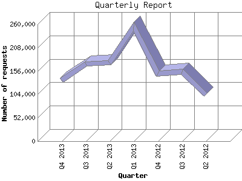

The Quarterly Report shows total activity on your site for each quarter of a
year. Remember that each page hit can result in several server requests as the
images for each page are loaded.
Note: Most likely, the first and
last quarters will not represent a complete quarter's worth of data, resulting
in lower hits.

| Quarter | Number of requests | Number of page requests | |
|---|---|---|---|
| 1. | Q2 2012 | 103,058 | 17,714 |
| 2. | Q3 2012 | 154,771 | 23,386 |
| 3. | Q4 2012 | 150,309 | 24,077 |
| 4. | Q1 2013 | 254,420 | 34,880 |
| 5. | Q2 2013 | 174,551 | 34,053 |
| 6. | Q3 2013 | 171,085 | 33,007 |
| 7. | Q4 2013 | 134,744 | 25,846 |
Most active quarter Q1 2013 : 34,880 pages sent. 254,420 requests handled.
Quarterly average: 27,566 pages sent. 163,276 requests handled.
This report was generated on November 26, 2013 03:09.
Report time frame April 23, 2012 00:22 to November 25, 2013 23:48.
| Web statistics report produced by: analog 5.1 / Report Magic 2.21 |